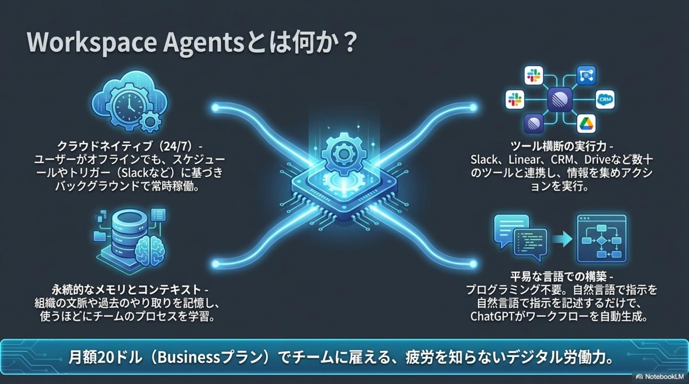
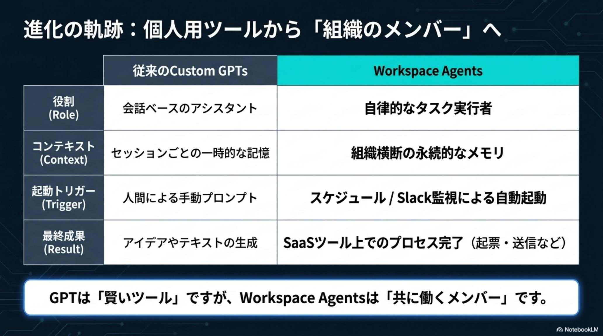

Issue № 04/23
The Daily AI Intelligence Brief
PLATFORM · OPENAI
Workspace Agents
engine: Codex · in ChatGPT
「人間API」から、
デジタル同僚へ。
24時間クラウド自律稼働 × 数十ツール直結 × Always-Ask 承認ゲート。
ChatGPT がついに「回答するAI」から「共に働く労働力」へ。
OpenAI が 2026-04-22 に発表した Workspace Agents は、単なる機能追加ではなく、「人間がツールと情報の間を手動でつなぎ合わせている」現代の知的労働の構造的欠陥（手作業のオーケストレーション問題）を根本から解決するパラダイムシフトだ。Codex を推論エンジンに、クラウド上で 24 時間自律稼働し、Slack・Salesforce・Linear・Jira・CRM・Gong など数十のツールに直接アクセス、多段階の業務プロセスを自律完了させる。Rippling の実運用では営業担当 1 人あたり週 5〜6 時間の作業削減を達成。Always-Ask 承認ゲート・RBAC・Compliance API で企業統制も両立する。月額 $20（Business プラン）から導入できる、「AIが組織のメンバーとして共に働く時代」の最初の実装例だ。
FIG 01 · 「人間ワークフローエンジン」から「デジタル労働力」へ——ChatGPT が自律稼働する組織のメンバーに進化
§ 02Before / After Story
劇的なBefore / After——営業の朝と PM の金曜
Workspace Agents を導入した組織では、日常の景色はどう変わるのか。Rippling など実運用事例が示す「営業の朝」と「PM の金曜夕方」の 2 シーンで、その威力を具体化する。人間の仕事は「やる／やらない」の承認へ完全にシフトする。

シーン 1：深夜の新規リード → 自律調査・CRM 参照・パーソナライズ下書き → 朝イチで「承認」ボタンのみ
✓
Rippling の実運用 — 営業 1 人あたり週 5〜6 時間削減
急成長企業 Rippling の実事例では、たった 1 つの「Lead Outreach Agent」が深夜のリード到着から企業リサーチ・CRM 履歴参照・リード適格性スコアリング・パーソナライズメール下書き・CRM 更新までを自律完了。営業担当者が朝やることは、Slack に届いたディールブリーフとメール下書きに対して「承認」ボタンを押すだけ。営業担当 1 人あたり週 5〜6 時間の作業削減を達成した（CryptoPunk 氏の投稿より）。

シーン 2：毎週金曜 17:00 に自動起動 → GA/CRM/社内 DB 集計 → 異常値検知 → PPT 生成 → 経営チャンネル配信